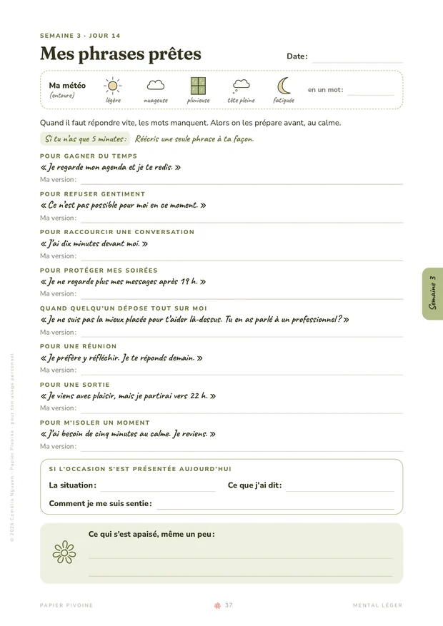

La réponse courte
Pour dire non sans culpabiliser, tu n’as pas besoin de trouver la phrase parfaite sur le moment. Tu peux gagner du temps avant de répondre, préparer à l’avance deux ou trois phrases qui te ressemblent, et dire non même si tu te sens un peu coupable après, parce que ça arrive souvent au début.
Dire non, pour moi, c’est difficile un peu partout : une demande au travail, la famille, un service à une amie, une invitation. En décembre, tout arrive en même temps, alors voici la phrase que je dis le plus souvent maintenant, quelques phrases prêtes, et une page pour préparer les tiennes.
Quand tu es hypersensible, tu sens souvent la déception de l’autre avant même qu’il la montre, et tu imagines déjà la suite : il va être vexé, elle ne me demandera plus rien, on va me trouver égoïste. Alors le oui sort tout seul, parce qu’il va plus vite que ta réflexion.
Et quand tu es aussi introvertie, chaque oui en trop te coûte une soirée, un samedi ou un peu de batterie que tu n’as pas toujours. En décembre, les invitations, les repas de famille et les demandes de dernière minute arrivent en même temps, et c’est souvent là qu’on dit oui à tout et qu’on le paie en janvier.
Avec la famille, c’est encore autre chose, parce qu’il y a l’histoire, les habitudes, et la peur de faire de la peine à des gens qu’on aime.
Tu n’es pas obligée de répondre tout de suite. Moi, ma phrase, c’est « Laisse-moi regarder, je te redis ça. », et maintenant, je la dis beaucoup plus souvent qu’avant.
Ce petit délai te laisse le temps de regarder ton agenda, ta batterie et ton envie, et de répondre avec ta tête reposée plutôt qu’avec le oui automatique. Et ta réponse peut être un oui, un non ou un oui à moitié.
Au travail, c’est pareil pour une réunion ou un dossier en plus : tu dis quand tu reviens vers la personne, et tu prends ce temps pour regarder ce que tu peux vraiment prendre.
Quand la phrase est prête avant, elle sort plus facilement le jour où on te demande. En voici quatre, une à moi et trois de mon programme d’écriture, à reprendre telles quelles ou à changer avec tes mots.
| La phrase | |
|---|---|
| Une demande, n’importe laquelle | « Laisse-moi regarder, je te redis ça. » La mienne |
| Une demande à laquelle tu veux dire non | « Ce n’est pas possible pour moi en ce moment. » Mental Léger, p. 37 |
| Une réunion ou une tâche en plus | « Je préfère y réfléchir. Je te réponds demain. » Mental Léger, p. 37 |
| Une invitation où tu as un peu envie d’aller | « Je viens avec plaisir, mais je partirai vers 22 h. » Mental Léger, p. 37 |
Elles sont courtes, elles ne s’excusent pas trois fois, et tu n’as pas à expliquer pourquoi. Un « non, merci » suffit souvent, même si ça ne paraît pas comme ça sur le moment.
Pour un service à une amie, quand tu es déjà vidée, tu peux lui dire ce qui est vrai sans tout raconter : que ce soir tu n’as plus d’énergie, et proposer un autre moment si tu en as envie.
Le mieux, ce sont tes phrases à toi, écrites avant d’en avoir besoin.
À essayer
5 minTes phrases prêtes pour décembre
(une seule phrase, c’est déjà bien)
Dans Mental Léger, mon programme d’écriture de six semaines, le jour 14 s’appelle « Mes phrases prêtes » : il y a huit phrases déjà écrites, de « pour gagner du temps » à « pour m’isoler un moment », et sous chacune une ligne « Ma version » pour écrire la tienne. Le programme est ici.

Dire non ne veut pas dire que tu ne te sentiras pas un peu coupable après. Moi, je le rejoue souvent dans ma tête, je me demande si l’autre m’en veut, et certains soirs j’écris une page pour le poser. Ça dépend des fois, et parfois ça continue de tourner un peu.
Si ça tourne le soir, tu peux écrire en trois lignes ce que tu as dit, ce que tu as peur que l’autre pense, et ce que tu sais vraiment. J’en parle plus longuement dans Comment arrêter de ruminer le soir ?.
Et si certains non te coûtent beaucoup, avec la famille par exemple, tu as le droit d’y aller par petites étapes : un oui à moitié, une heure plutôt qu’une soirée, ou un départ plus tôt.
Si tu as envie de me dire à qui tu as le plus de mal à dire non, tu peux m’écrire ici. Ça me fait toujours plaisir de te lire.